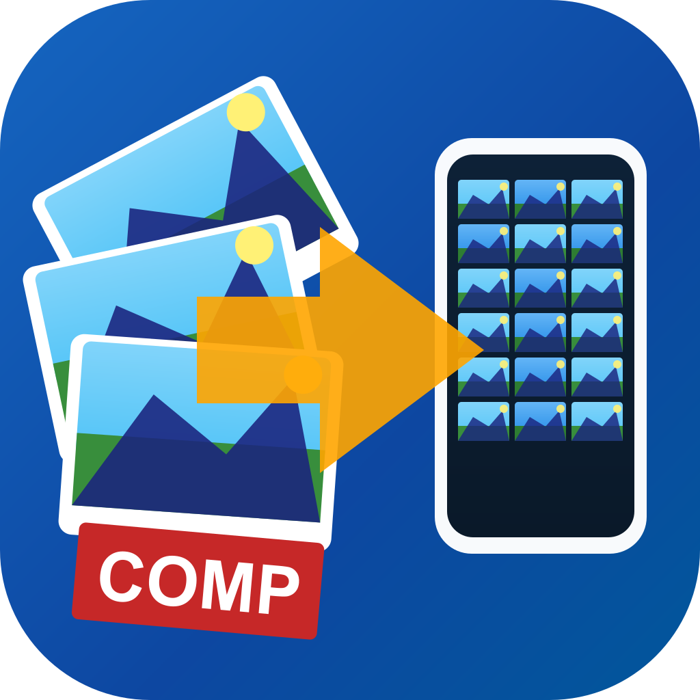

Picture Converter
高画質画像ファイルを2MB以下に一括変換するデスクトップアプリケーション
macOS
Windows
Linux
ダウンロード
現在コード署名なしのビルドです。初回起動時はGatekeeperのブロックが表示される場合があります。
ブロックされた場合、システム設定 → プライバシーとセキュリティ から「このまま開く」を選択してください。
説明
各種画像ファイル（.jpg .jpeg .png .heic .heif .webp）を、iPhone 16 Pro Maxでも劣化が分からない品質を保ちつつ、2MB以下のJPGになるように一括変換するアプリケーションです。 画像ファイルが含まれたフォルダ単位で変換処理を行います。 EXIFが取得できる場合、撮影日時・GPS座標を抽出し、自動生成する各種確認用HTML（変換結果、画像プレビュー、スライドショー）に利用します。
主な機能
- フォルダに入った複数画像ファイルを適正な画像サイズに一括で変換
- 変換フォルダには各種確認用HTMLを生成
- 複数フォルダを一括変換可能
- 変換オプション（品質・最大幅・並列数など）が設定可能
- 変換せずに種確認用HTMLを作成することが可能
- 変換中の実行ログを表示
- 撮影日時、GPS座標があれば、HTMLに表示
- 変換完了後、変換結果HTML（result.html）がワンクリック表示可能
スクリーンショット
最終更新: 2026/04/23